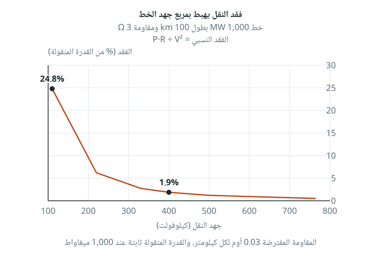

القدرة الكهربائية
Electric Power
معدّل تحويل الطاقة الكهربائية، P = V·I، ويأخذ في أي مقاومة الصيغة P = I²R. الفقد في خطوط النقل يتناسب مع مربع التيار، ولهذا تُرفع جهود النقل بدل تكبير التيار.
القدرة الكهربائية هي معدّل نقل الطاقة عبر مقطع موصل: P = V·I. سخّان على 230 V يسحب 4.35 A يحوّل 1,000 جول كل ثانية إلى حرارة. وفي أي مقاومة تُكتب الصيغة نفسها بصيغتين مكافئتين: P = I²R = V²/R، والثانية هي التي تحكم حساب الفقد في خطوط النقل، لأن التيار هو المتغيّر الذي يمكن تصغيره برفع الجهد.
تُحاسب الطاقة بالكيلوواط ساعة، وهي وحدة طاقة لا قدرة: 1 kWh = 3.6×10⁶ J. جهاز بقدرة 1 kW يعمل ساعة يستهلك وحدة واحدة، وجهاز بقدرة 2 kW يعمل نصف ساعة يستهلك الوحدة نفسها. القدرة لحظية، والفاتورة تكامل لها على الزمن، لا قيمة واحدة ثابتة.
كيف تعمل الظاهرة؟
الطاقة لا تنتقل داخل النحاس بل في المجال الكهرومغناطيسي المحيط بالموصل، وناقل كثافتها هو متجه بوينتنغ S = E×H. الإلكترونات تنجرف بمليمترات في الثانية، والشبكة البلورية شبه ساكنة، ومع ذلك تصل إلى الحمل قدرة V·I كاملة. في الحمل المقاوم تتحوّل هذه القدرة إلى حرارة عبر تصادمات الحاملات؛ وفي المحرك والمحوّل يتوزّع التحويل بين عمل ميكانيكي وحرارة، ويظهر الفاقد في النحاس بصورته I²R وفي الحديد بخسائر هيستيريسية وتيارات دوامية.
العلاقة بالأرقام
خط طوله 100 km ومقاومته 0.03 Ω لكل كيلومتر، أي R = 3 Ω، ينقل 1,000 MW. عند 400 kV يكون I = 2,500 A والفقد I²R = 18.75 MW، أي 1.9% من القدرة المنقولة. عند 110 kV يكون I = 9,091 A والفقد 248 MW، أي 24.8%. رفع الجهد من 110 إلى 400 kV يجعل الفقد 7.6% من قيمته السابقة، أي انخفاضًا بنحو ثلاثة عشر ضعفًا، لأن النسبة تساوي مربع نسبة الجهود. هذا الحساب وحده يفسّر بناء خطوط 400 kV و765 kV، ويفسّر أيضًا بقاء التوزيع المنزلي بجهد منخفض: التيارات صغيرة والمسافات قصيرة.
مفاهيم متقاربة
يُخلط بين القدرة والطاقة فيُقال إن جهازًا استهلك 2,000 واط، والصواب أنه سحب قدرة 2,000 W واستهلك 4 kWh في ساعتين. ويُخلط بين الكيلوفولت أمبير والكيلوواط: الأول حاصل ضرب V·I دون اعتبار فرق الطور، والثاني V·I·cos φ؛ محوّل بقدرة 100 kVA يغذّي حملًا بمعامل قدرة 0.8 لا يسلّم أكثر من 80 kW فعلية. والخلط الثالث أن القدرة المكتوبة على لوحة المحرك قدرة اسمية، لا القدرة المسحوبة عند تحميل جزئي، وهي أقل بكثير.
حدود التطبيق
P = V·I صحيحة لحظيًّا في كل دارة، لكن قراءتها كرقم ثابت تفشل في التيار المتناوب حين يختلف طور الجهد عن التيار: تصبح القدرة الفعلية P = V·I·cos φ، وتبقى قدرة غير فعّالة Q = V·I·sin φ تُتبادل مع المصدر بلا شغل صافٍ. وفي الأحمال غير الخطية كالمقوّمات والمحوّلات الإلكترونية لا يكفي cos φ لأنه معرَّف للموجات الجيبية، فتُستخدم معاملات تشويه توافقية. كذلك لا تصف I²R خسائر الحديد في المحولات، فهي تتبع الجهد والتردد لا مربع الحمل.

| الكمية | القيمة | المصدر |
|---|---|---|
| طاقة كيلوواط ساعة واحدة | 3.6×10⁶ جول | [1] |
| تيار سخّان 1,000 W على 230 V | 4.35 أمبير | [1] |
| فقد خط 100 km عند 400 kV | 18.75 ميغاواط | [3] |
| الفقد نفسه عند 110 kV | 248 ميغاواط | [3] |
المصادر
- 1 Electrical Energy and Power — OpenStax, University Physics Volume 2. openstax.org/books/university-physics-volume-2/pages/9-5-electrical-energy-and-power · اطُّلع عليه 2026-11-16
- 2 SI Units — NIST, Physics Laboratory. physics.nist.gov/cuu/Units/units.html · اطُّلع عليه 2026-11-16
- 3 How electricity is generated — U.S. Energy Information Administration. www.eia.gov/energyexplained/electricity/how-electricity-is-generated.php · اطُّلع عليه 2026-11-16
استشهد بهذا المصطلح
الصيغتان مبنيتان من بيانات الصفحة نفسها: العنوان والتاريخ ورابط النسخة المنشورة.
القدرة الكهربائية — Electric Power. (2026). ديوان المعرفة — انفراد. https://infiradev.com/diwan/terms/electric-power.html
@misc{electric-power2026,
title = {القدرة الكهربائية},
titleaddon = {Electric Power},
howpublished = {{ديوان المعرفة — انفراد} — مرجع علمي عربي},
year = {2026},
url = {https://infiradev.com/diwan/terms/electric-power.html},
urldate = {2026-11-16},
note = {مراجعة علمية: مراجعة آلية — ديوان المعرفة (روابط المصادر + عقد المحتوى + وجود الرسم) 2026-11-16}
}
راجعه: مراجعة آلية — ديوان المعرفة (روابط المصادر + عقد المحتوى + وجود الرسم) 2026-11-16 · 2026-11-16 · آخر تحديث 2026-11-16